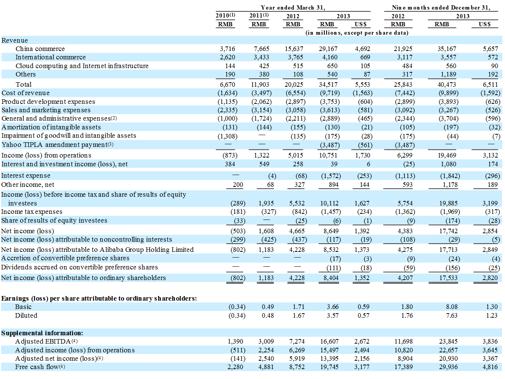

返回主页
Consolidated Statements of Operations Data

(1) Financial results of Alipay were consolidated into our financial statements prior to the year ended March 31, 2012. Due to regulatory requirements relating to payment service providers in China, our relationship with Alipay was restructured. See “Related Party Transactions” for more details. Since then, as we do not have any ownership interest in, or control over, Alipay, the financial results of Alipay have not been included in our consolidated financial statements starting from the end of fiscal year 2011.
(2) In the nine months ended December 31, 2013, these expenses included an equity-settled donation expense of RMB1,269 million (US$204 million) relating to the grant of options to purchase 50,000,000 of our ordinary shares to a non-profit organization designated by Jack Ma and Joe Tsai.
(3) We and Yahoo amended the existing TIPLA in September 2012, pursuant to which we made a lump sum payment in the amount of US$550 million, which is reflected as US$561 million in the convenience translation in the table above as a result of the change in the Renminbi to U.S. dollar exchange rate since the date of payment.
(4) See “― Non-GAAP Measures” below.
version:1.0; jobnet@188.com © retter2012.com